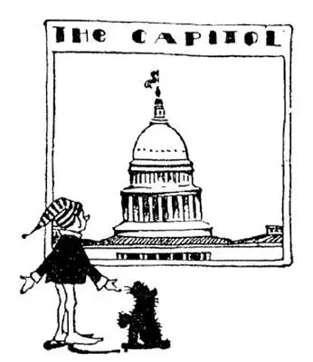
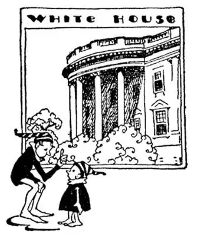
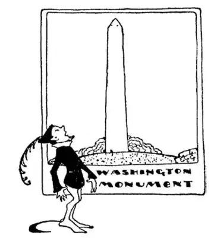
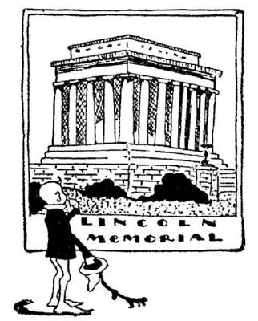

06
A City Built in a Swamp
建于沼泽中的城市

A CAP which you wear on your head means “head.”
A cap -tain also means “head”—he’s the head of a company of soldiers.
A cap -ital means “head” too—it’s the head city of a country or of a State.
When I was a boy I lived in the capital of the United States, but I did not live in the Capitol of the United States. That may sound funny, but it’s true, for there are two kinds of capitals. The capit-Al is a city, the Capit-Ol is a building, and of course I didn’t live in the Capit-Ol building. Not even the President lives there.
When our country was started men tried to find a suitable place for the capital. Eight places were tried out and at last a swamp was chosen as the proper place to build the city, because it was then near the center of our country. So a city was built there and called Washington after George Washington, because he was the First President of the United States. Even when-I-was-a-boy there was a part of Washington which every one called “Swamp Puddle” or “Swam-poodle.” I wonder if boys there still call it that. It is now one of the most beautiful cities in the World, with lovely parks and beautiful buildings. George Washington didn’t live in Washington. He lived at a place in the State of Virginia about ten miles away called Mount Vernon. Washington is now on the edge of our country, over a thousand miles from the center. The capital hasn’t moved, but the center of the country has.
There are twenty-eight cities named “Washington” in the United States. Washington, the capital, looks on the map as if it were in the State of Maryland, but it isn’t. It isn’t in any State. The capital of all the States had to have a place all its own; so this piece of land is called the District of Columbia, or D. C. for short. The District of Columbia is named after Columbus, the man who discovered America. So if you write a letter to any one in Washington, the capital, you must be very careful to put “D.C.” after Washington, for there are so many cities and towns named after Washington that your letter might not go to the right one.
When-I-was-a-boy I thought the Capitol was the most beautiful building in the World. Since then I have seen nearly all of the most beautiful buildings in the World, and I have changed my mind. I have even seen a building fit to be in Heaven. I used to make a copy of the Capitol as nearly as I could in my sand-pile. I would fill a shoe-box with wet sand, then turn it carefully upside down so as to empty it out without breaking, and I made the dome on top in the same way with a tea-cup.
I thought all capitols of other countries must have domes, too. I didn’t learn until later that not capitols but churches were the first buildings to have domes, and that many capitols have no domes. As a boy I used to climb to the top of the dome—for there was no elevator—to see the view of the city, and to look down on the inside at the floor far below where people walking seemed like ants crawling.

I thought it the most beautiful building in the World
我认为国会大厦就是世界上最美的建筑
On one side of the Capitol is a large room called the Senate, and on the other side is a still larger room called the House of Representatives. In both the Senate and the House of Representatives men sit at desks like boys in school. These men are the ones who make our laws, which are rules that everybody in the United States must obey. The men in the Senate are called Senators. The men in the House are called Representatives. When I say “men,” I mean women too, for some of the Senators and Representatives are women.
Each State chooses two Senators to go to the Capitol in Washington. No matter whether the State is big like Texas or whether it is little like Rhode Island, it sends only two Senators. And each State also sends to the Capitol in Washington other men or women called Repre-sentatives, but the number of Representatives each State sends depends on the number of people in the State; New York has the most people, so it sends the most Representatives. Several States have so few people that they send only one Representative. The Senate and the House of Representatives together are called “Congress,” and when Congress is holding a meeting a flag is flying over the Capitol.
Look in the front of this book or any other book and you will see printed there “Copyright.” Just across a park from the Capitol is a large building with a golden dome on top. This building is the Library of Congress. Every one in the United States who prints a book sends two copies of it to this library, and the library sends him a “copy-right,” which means that no one else has the “right” to copy it or print it without his permission. In the Library of Congress there are more books than in any other building in the country.

You might live there some day
也许有一天你会住在里面
Look on your camera or phonograph, or any other machine in your home, and see if you can find the word “Patented.” Any one in the country who invents anything new and useful—whether it is a fountainpen, an airplane, or a mouse-trap—sends one—a model, it is called—to another building in Washington called the Patent Office and asks for a patent. If the thing is really new and no one has ever made anything of the kind before, the Patent Office gives him the sole right to make and sell it, and no one else is allowed to make or sell it. That is called a patent. Some of the models are very curious. One model that some one had invented was a steam-engine that walked with iron legs. When-I-was-a-boy I invented a “snapback” handkerchief. I would blow my nose, then let go the handkerchief, and a rubber pulled it back into my pocket. But I didn’t get a patent.
Parades! Soldiers! Bands of music! Flying flags! Some of the greatest parades have passed down a very wide street in Washington called Pennsylvania Avenue, or usually just “The Avenue.” It might be called “Parade Avenue.” It stretches from the Capitol to another building about a mile away that looks like a big bank. This other building is called the Treasury. There is a picture of it on the $10 bill. In the Treasury is kept money of the United States. We write United States with two letters, U. S., and we write the sign for “dollars” with the same two letters, written one on top of the other, with the bottom of the “U” cut off—thus, $.
Paper money and postage-stamps are printed in another building.
“You see that man over there turning the handle of that printing-press?” says the guide who shows you around. “He makes a million dollars a day!”
“Whew! He must be the richest man in the World.”
“Oh, no. He only gets $5 a day.”

It seemed a mile high
它看起来足有1英里高
The money made out of silver, and gold, and copper is made in another city—not in Washington—at a place called the Mint.
When-I-was-a-boy I had an old bookcase which I called my museum. In it I had a starfish, some shells, a bird’s nest, a “gold” rock, and so forth. In Washington there is a large museum called the National Museum in which there is a huge collection of all sorts of curious and remarkable things from all over the World.
There are many white houses in the country, but next door to the Treasury is a White House that is different from any other, for in this house the President lives. There is a picture of it on the $20 bill. From the back porch of The White House the latest President of the United States can look across his back yard and see a monument to the First President—Washington. The Washington Monument is the highest piece of stone work in the World. It’s like a giant finger, five hundred and fifty-five feet high. It seemed a mile high, but it is really only about a tenth of a mile high—not even as high as a low mountain. No man has ever been able to build as high as God. Though there is an elevator, I used to run up the stairs, two steps at a time, to the top of the monument—just for fun—to see how quickly I could do it, and whether I could beat the elevator. Boys are like that. They will run a race with anything. I could beat the elevator down by jumping half a dozen steps at a time, but not up. My heart did the beating going up.

Lincoln memorial （林肯纪念堂）
There is a long pool of water at the foot of the Washington Monument in which you can see the monument as in a mirror. At the other end of this pool is a marble building with columns all around the four sides. It was built in honor of Abraham Lincoln, the sixteenth President after Washington. It is probably the most thrilling memorial ever built to a human being. There is a picture of Lincoln on the $5 bill and on the other side a picture of his Memorial. Lincoln was born in a tiny house made of logs, so small that the whole house could be put in one room of your home. No boy was ever poorer, or had less money or less chance, and yet he became President of the United States. While he was President two parts of the United States fought a terrible war with each other and almost became un-United, but Lincoln kept the States together. That’s why this beautiful building was built in his honor. The only thing in the building is a statue of Lincoln sitting in a chair. He looks down on the crowds of people who visit him, as if his spirit were inside that figure of stone.
【中文阅读】
有些含有cap（帽子）的英语单词表示“头”的意思。因为帽子是戴在头上的。
Cap-tain（队长）是“头”的意思——他是一队士兵的头。
Cap-ital（首都）同样也有“头”的意思——它是一个国家或一个州的头。
我小的时候住在美国的首都，但我并不是住在美国的国会大厦 [1] 。听起来很有趣，但真的是这样，因为这是两个不同的词。“Capital”，首都，是一个城市；“Capitol”，国会大厦，是一栋建筑，我当然不住在国会大厦里，就连总统也不住在那里。
美国刚建立的时候，人们要找一个合适的地方作首都。考察了八个地方后，最后一块沼泽地被选为最合适建首都的地方，因为它当时靠近国家中心。于是在那里建了一座城市，并以美国第一届总统乔治 · 华盛顿的名字命名为华盛顿。当我还是个小孩子的时候，华盛顿还有一块地方人人都称之为“沼泽坑”或者“沼泽潭”。不知那里的孩子们是不是还这样叫。华盛顿现在是世界上最美丽的城市之 一，有可爱的公园和美丽的建筑。乔治 · 华盛顿那时并不住在华盛顿。而是住在距华盛顿有大约10英里的弗吉尼亚州的一个叫做弗农山庄的地方。华盛顿现在处于美国的边界，离中心有一千多英里。首都还在原地，但是国家的中心位置变了。
美国有28个城市都叫“华盛顿”。在地图上看首都华盛顿好像是位于马里兰州，其实却不是。它不属于任何州。所有州的首府必须有属于它自己的一块地方；所以这块地方就被叫做哥伦比亚特区，简称D.C.。哥伦比亚特区是以发现美洲大陆的哥伦布的名字命名的。所以如果你写信给首都华盛顿的某人，你得很仔细地在华盛顿后面加上“D.C.”，因为叫华盛顿的城市和城镇太多，不加的话很可能你的信就送不到你想寄去的地方。
小时候，我以为国会大厦就是世界上最美的建筑。后来我见到了世界上几乎所有最美的建筑，我改变了想法。我甚至还见过一个适合放在天堂里的地方。小时候玩沙，我都要在沙堆里尽可能造一个国会大厦。我先用鞋盒装满潮湿的沙子，然后小心翼翼地把它扣在地上，这样沙子倒出来不会散开，然后用茶杯以同样的方法在上面加个圆屋顶。
我原以为其他国家的国会大厦也一定有圆屋顶的。直到后来我才知道国会大厦不是最早有圆屋顶的建筑，最早的是教堂，而且许多国会大厦并没有圆屋顶。小时候我常爬到圆屋顶上面去——因为当时还没有电梯——观看城市风景，并朝下看大厦里地板上的人像蚂蚁爬行似的在走动。
国会大厦的一侧有个大房间，叫参议院，另一侧有个更大的房间，叫做众议院。在参议院和众议院里，人们就像孩子上课那样坐在桌子旁。正是这些人制定了美国的法律，法律就是所有美国人都要遵守的规则。参议院里的人叫做参议员，众议院里的人叫做众议员。我说“人”的时候，当然也包括那些女参议员和女众议员。
每个州选两名参议员到华盛顿的国会大厦。不管是像德克萨斯这样的大州，还是像罗德岛这样的小州，都只能选送两名参议员。每个州还选众议员到国会大厦，不过每州选送的众议员人数取决于这个州的总人口数；纽约人口最多，所以它选送的众议员也最多。有几个州人数太少，只能选送一名众议员。参议院和众议院一起被称为“国会”，国会召开会议的时候，国会大厦上会有一面旗子在飘动。
看看这本书或者其他书的前面，你会看到上面印有“版权”一词。从国会大厦穿过一个公园有一座很大的建筑，上面有金色的圆屋顶，这就是国会图书馆。在美国，任何人要出版一本书都要先送两册到这个图书馆，然后图书馆会 授予他“版权”，就是说其他人没有他的同意就无“权”复印或印刷那本书。国会图书馆的藏书比美国任何别的建筑物里的书都要多。
看看你的照相机或留声机，或者家里其他任何机器，看看能不能找到“专利”这个词。美国任何人发明了新的有用的东西——不管是自来水钢笔、飞机还是老鼠夹——都要送一个——一般称为模型——到华盛顿的另一栋叫做专利局的大楼里，去申请专利。如果这个东西确实是新发明，从来没做过同样的东西，专利局就会授予他制造和销售这种东西的独享的权利，其他任何人都不允许生产和销售同样的东西。这就叫做专利。有些模型非常稀奇古怪。有个人发明的模型是个能用铁腿走路的蒸汽机。我小时候发明过一种“快速返回”手帕。擤完鼻涕，我一松开手帕，一根橡皮筋就把它拉回到我的口袋里。但是我没有获得专利。
游行！士兵！乐队！飘扬的旗帜！有一些大规模的游行都经过华盛顿一条非常宽大的街道，叫宾夕法尼亚大街，人们通常就直接称它“大街”。这条街满可以叫做“游行大街”。它从国会大厦一直延伸到约1英里外的另一栋建筑物，那栋建筑物看起来像是座大银行，那是财政部。10美元上就有它的图案。美国的钱都由财政部保管。我们用U.S.这两个字母表示美国，我们同样用这两个字母表示“美元”，把一个字母写在另一个上面，并把U的底下切掉——这样就变成了$。
印制纸币和邮票是在另一栋建筑物里。
“你看到那边那个人在转动印刷机手柄吗？”带你参观的导游会这样介绍说，“他一天制造一百万美元！”
“哇！他一定是世界上最有钱的人了。”
“哦，不。他一天只挣5美金。”
银币、金币和铜币是在另外一个城市制造的——不是在华盛顿——而是在一个叫铸币局的地方。
我小的时候有一个很老的书架，我把它叫做博物馆。里面放了一只海星、一些贝壳、一个鸟窝、一块“黄金”石等。在华盛顿有一个非常大的博物馆，叫做国家博物馆，里面陈列着从世界各地搜集过来的各种各样稀奇古怪、非同寻常的东西。
在全美国有很多白色的房子，但是要数财政部旁边那个白宫最为与众不同，因为那是总统住的地方。20美元上面就有它的图案。从白宫后面的走廊上美国在任总统可以看到在他的后院对面有一个纪念碑——此碑是为纪念第一任总统华盛顿而建的。华盛顿纪念碑是世界上最高的石方工程。它就像一根巨大 的手指，有555英尺高，看起来足有1英里高，但它实际高度大概上只有1英里的十分之一——甚至还没有一座小山高。没有人能像上帝那样建造出高耸入云的东西。虽然有了电梯，我过去却经常自己登上纪念碑，一步两个台阶向上跑——这只是为了好玩——看看自己能有多快，能不能超过电梯。男孩子就是这样，跟什么都要比比速度。下来的时候我能一次跳六个台阶，比电梯还快，但是上去却比不过电梯；上的时候我心跳加速，只好败下阵来。
华盛顿纪念碑前有一个长长的水池，就像一面镜子，里面可以看到纪念碑的倒影。在池子的另一端有一个大理石的建筑，四周有圆柱环绕。这是为了纪念美国的第十六任总统亚伯拉罕 · 林肯而建的。这也许是有史以来为个人而建的最激动人心的纪念堂了。5美元纸币上有林肯像，纸币另一面就是他的纪念堂。林肯出生在一个木头造的房子里，房子小得可怜，可以整个放进你们家任何一个房间里。没有人比他更卑微、更贫穷、更缺乏机会的了，然而他后来当了美国总统。他任总统期间，美国的南北两方爆发了激烈的战争，差一点就分裂了，但是林肯维护了美国的统一。这就是为什么要为他建造这座漂亮的纪念堂。纪念堂里没有其他东西，只摆放着一尊坐在椅子上的林肯雕像。他向下注视着来瞻仰他的人群，好像他的精神还活在这石头的雕像里。